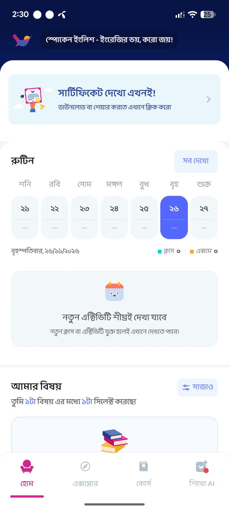

Shikho SuperApp · UX audit
Before we remove it, here is exactly what this block is, which users get it, and in what situations — traced from the tech spec & codemap.

It’s a home-screen widget — the Routine (রুটিন) section: the weekly day strip (শনি–শুক্র), the class/exam legend, and a daily activity card.
It is not the full Class Routine calendar. That’s a separate screen opened by “সব দেখো” or push deep links. Removing this home widget does not delete the full routine feature — that stays reachable unless you say otherwise.
It renders on the Home tab only, and only for enrolled students:
| User type | Sees the Routine section? | Where |
|---|---|---|
| Paid student | Yes | PaidV2Screen renders it |
| Trial student | Yes | TrialV2Screen renders the same widget |
| Free / not enrolled | No | FreeUserScreen has no routine section at all |
So the section is always present for any paid or trial student on their home. What changes is the card inside it.
The card has five states, picked from the student’s course/phase situation:
| State | When it appears | What shows |
|---|---|---|
| Empty your screenshot | The selected day has nothing scheduled | “নতুন এক্টিভিটি শীঘ্রই দেখা যাবে”, day tabs still visible |
| Active | The day has classes / exams | The routine items for that day |
| Quarter not started | Paid, but the quarter hasn’t begun | “শীঘ্রই তোমার রুটিন যুক্ত হবে” |
| Current quarter unpaid | Running quarter not bought | Header + a locked enrol card |
| All quarters over | Whole program finished | Congratulations card + “see new courses” (the dead-loop ticket) |
Two scope decisions change the ticket entirely:
Removing this home widget does not touch the dedicated Class Routine calendar (“সব দেখো” / push deep links). I’ll assume that stays unless told otherwise.
Sources: dashboard & class-routine specs, codemap — RoutineSection.kt, PaidV2Screen.kt, TrialV2Screen.kt, FreeUserScreen.kt, HomeBody.kt, toRoutineSectionState.